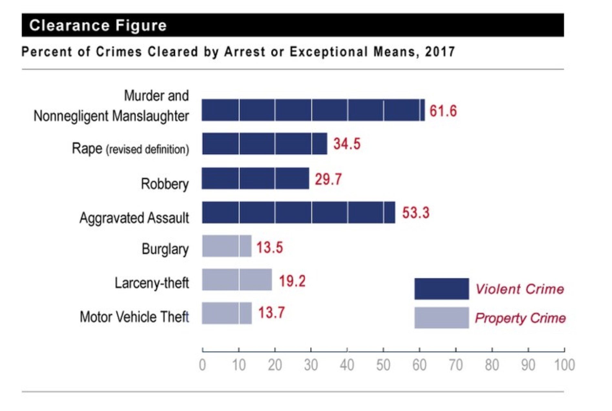
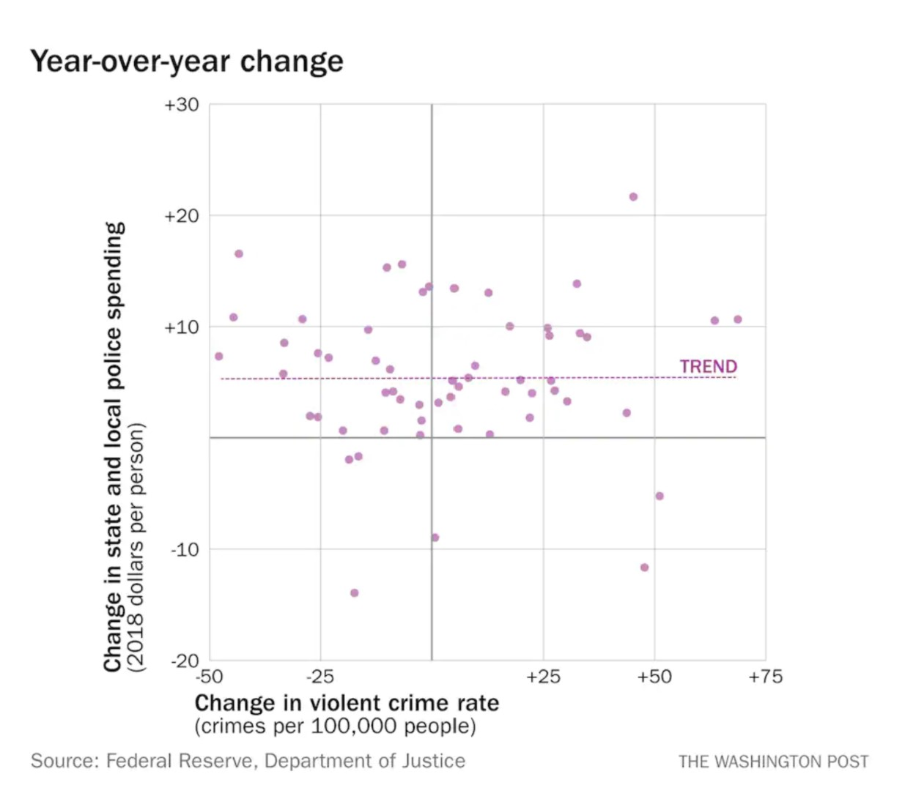

The slogan “Defund the Police” has become a common phrase used ever since the George Floyd protests and since the Black Lives Matter movement has been brought to the public eye in the Summer of 2020. The problem is, not many really understand what “Defunding the Police” entails.
On the contrary to what some believe, when people advocate defunding the police, they are not supporting the abolition of the police system. Instead, Rashawn Ray, a professor of sociology and Executive Director of the Lab for Applied Social Science Research at the University of Maryland, explains that the movement proposes to reallocate or redirect funding away from the police department to other government agencies funded by the local municipality to essentially relieve the workload of the police department and to weed out the “bad apples.”
There are a lot of different reasons people want a change in the police system. One of the major reasons for this need is because of the fact that most calls for service are for nonviolent encounters. According to a study published in the Police Quarterly, only 6.4 % of calls for service were for violent encounters. And even when dealing with violent crime and despite what many people think, the police leave a surprising amount of violent crime unsolved. According to the national data collected by the FBI, in 2017 approximately 38% of murders, 66% of rapes, 70% of robberies, and 47% of aggravated assaults go uncleared every year.
The skillset police officers are equipped with generally are not helpful in these types of scenarios as they are trained “in use-of-force tactics and worst-case scenarios to reduce potential threats” according to Ray.
Additionally, data shows that there’s no clear correlation between the increase of police spending and overall crime. So, we want to shift away from the prison system and more to prevent future criminals through social services. For example, the overcriminalization of drugs is a problem as the current solution to this is jail time; if there was a bigger push for rehabilitation and other social services to help people instead of throwing them into prison, there would be a decrease of drug usage and related crime.
Police tend to escalate non-violent situations to violent ones because they are specifically trained to reply with force as well as worst case scenarios. They actually spend around more than three times the amount of time spent on de-escalation when compared to how long they train for using firearms
According to an independent study, around 1,000 people are killed by police officers every year in the US. When looking closer at police training, there are around 18,000 police agencies in America but there is no national standard on training/procedures; the average amount of training a police officer goes through is around 21 weeks before they are qualified to go on patrol. It’s much worse in the United States; when compared to numerous countries, the US ranked amongst the lowest in the average amount of training time. Actually, many countries require police officers to have a college degree or equivalent while most only require a high school diploma in the US. I find it troubling that police normally have less than five months of training while lawyers have around 7 years of higher education. Why is five months of training enough time to enforce the law but not to understand it?
There is so much more to “Defunding the Police” than what the general public knows and there are so many ideas and proposals that go into making the shift from policing to helping the public through better funded social services. We have been long overdue for a change in policing as there are just so many things wrong with the current police system and know you know the best course of action is to defund the police (and by defund I mean reallocate a portion of police funding to social services and better the community)!
Want to read more?
Try these works:
What does ‘defund the police’ mean and does it have merit? By Rayshawn Ray
Defund the Police: Moving Towards an Anti-Carceral Social Work By Jacobs, Leah A., et al.